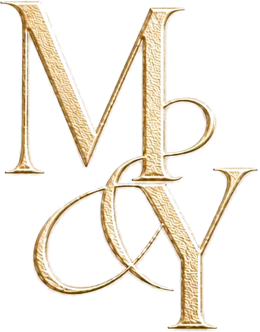
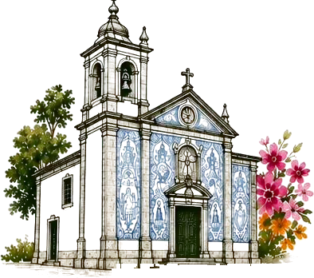
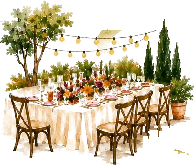
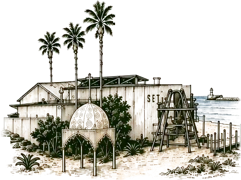
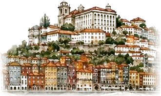

Plus que — jours avant le 5 septembre 2027

05.09.27 & 06.09.27
Porto
Je confirme ma présence
Une réponse par personne : si vous venez à deux, remplissez le formulaire deux fois.
Déroulé du mariage
Dimanche 5 septembre 2027

13h30
Cérémonie
à l'église São Martinho de Cucujães
Rua do Município, 3720 Cucujães (Oliveira de Azeméis)
Ouvrir l'itinéraire

puis
Cocktail et dîner
à la Quinta do Pinhal, à Jovim
Rua das Sanjinhas 320, 4510-127 Jovim (Gondomar)
Ouvrir l'itinéraire
Lundi 6 septembre 2027

14h30
Brunch et soirée
au Set Lounge, à Azurara
Rua do Gaiato 431, 4480-179 Azurara (Vila do Conde)
Ouvrir l'itinéraire
Idées logements

À visée informative, des logements dans la région du mariage pour vos idées et réservations.
Nos suggestions arrivent bientôt.